Tab
Piano di Erogazione
Dopo
aver calcolato la quantità di ProFume necessaria in base al tab Definizione
Dosaggio per la
Fumigazione, siete pronti per pianificare l’erogazione del fumigante. Il Piano di Erogazione è il terzo tab di ProFume Fumiguide e in esso vanno riportate le Linee di erogazione del gas e i rispettivi ventilatori per il calcolo del Tasso Effettivo e del Tasso Consentito di erogazione del fumigante nelle varie aree della struttura.
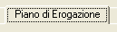
L’obiettivo del Piano di Erogazione consiste nel prevenire
eventuali fenomeni di fog-out (nebulizzazione) nello spazio sottoposto a
fumigazione. Con fog-out all’interno della struttura fumigata si intende il fenomeno di condensazione dell’umidità in seguito ad un notevole e repentino calo della temperatura dell’aria fino al suo punto di rugiada. I fenomeni di fog-out possono essere evitati: 1) utilizzando linee di erogazione con diametro interno e lunghezza appropriati: 2) utilizzando ventilatori appropriati di capacità sufficiente a miscelare in modo efficace l’aria più calda presente nella struttura con l’aria più fredda che si genera con l’erogazione di ProFume.
Nessun gas addizionale è
utilizzato per pressurizzare le bombole di ProFume. Ogni bombola piena
contiene 56,7 kg di prodotto alla pressione di circa 14-20 Bar. Si rimanda alla tabella sottostante per l’esatta pressione alle varie temperature.
Pressione della bombola del gas fumigante ProFume in relazione della temperatura:
| Temperatura |
Pressione |
| oC |
kPa |
Bars |
| -17,8 |
490 |
4,9 |
| -12,2 |
594 |
5,9 |
| -6,7 |
710 |
7,1 |
| -1,1 |
849 |
8,5 |
| 4,4 |
1000 |
10,0 |
| 10,0 |
1173 |
11,7 |
| 15,6 |
1366 |
13,7 |
| 21,1 |
1580 |
158 |
| 26,7 |
1822 |
18,2 |
| 32,2 |
2090 |
20,9 |
| 37,8 |
2386 |
23,8 |
| 43,3 |
2712 |
27,1 |
| 48,9 |
3072 |
30,7 |
| 54,4 |
3469 |
34,7 |
| 60,0 |
3906 |
39,0 |
| 65,6 |
4389 |
43,9 |
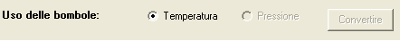
Selezionare sia la temperature che la pressione delle bombole al fine di calcolare il tempo, min, necessario per lo svuotamento della bombola connessa ad ogni linea di erogazione.
Dopo aver introdotto temperatura e pressione, si deve selezionare il tasto converti.
Se il calcolo di una Temperatura -Pressure non è stato effettuato, compare un messaggio di avvertimento, come riportato di seguito. Tale conversione, deve essere effettuata prima che l'utilizzatore proceda all'inserimento di altre informazioni nella tabella.
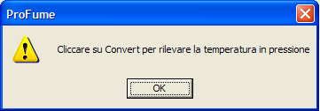
Alla
colonna Denominazione Area appaiono, come opzioni di un menu a tendina, le aree precedentemente inserite nel tab Definizione Dosaggio per la Fumigazione. Selezionare l’area o le aree di ubicazione delle linee di erogazione e dei ventilatori.
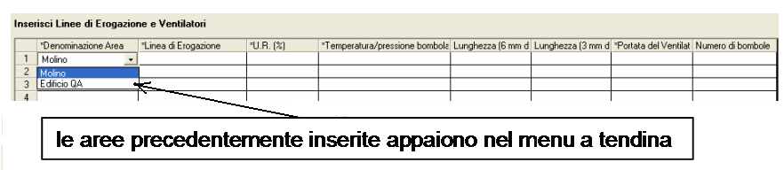
Dopo aver selezionato l'area desiderata nella tabella, si possono riempire le sezioni: Numero della linea di erogazione, umidità relative se nota , temperature della bombola temperatura/pressure, diametro e lunghezza della linea di introduzione line portata del ventilatore. Selezionare e digitare ogni modifica sia necessario apportare rispetto a quanto compare nella tabella. Si consiglia di usare termini descrittivi per una migliore identificazione quando si riportino I dati nella tabella Dati di monitoraggio.
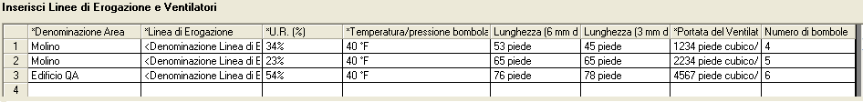
E' necessario introdurre I dati di Umidità Relativa, temperatura/pressione, delle bombole diametro interno delle linee di introduzione e della portata del ventilatore utilizzato fan prima di premere il tasto calcolare la dose di introduzione. Descrizioni dei termini sono riportate di seguito:
Linea di Erogazione: tubicino mediante il
quale il fumigante viene erogato nello spazio di fumigazione
dall’esterno della struttura o della cella.
Umidità Relativa
(U.R.):
rapporto, espresso in percentuale, tra la quantità di acqua contenuta nell’aria e quella necessaria a saturare l’aria nelle stesse condizioni. L’intervallo valido è 1 - 90%.
Temperatura Bombola:
fa riferimento alla temperatura delle bombole. Tale temperatura può essere
stimata in base a quella dell’aria nel caso le bombole non siano esposte direttamente ai raggi solari e abbiano avuto il tempo di adattarsi alla temperatura ambiente. L’intervallo valido per la temperatura è 4,4 - 65,6 °C (40 - 150° F). Per maggiori informazioni si rimanda al Manuale all'uso del ProFume.
Pressione della bombola:
esprime la pressione del gas contenuto nella bombola e può essere letta direttamente da un manometro piazzato all'uscita della linea di introduzione
Diametro interno della linea di introduzione: sono riportate due opzioni nel menu di questa colonna: 6,35 mm e 3,175 mm, si selezioni quella relativa .
Portata del Ventilatore:
massimo tasso di spostamento d'aria prodotto da un ventilatore.
Lunghezza della linea di introduzione: si riporti la lunghezza in metri lineari
( 0-152 m).
N° di bombole:
è il numero di bombole collegate insieme per ogni linea di introduzione
Una volta che tutti I valori siano inseriti, premere il tasto “Calcolare la dose di introduzione”. La Fumiguide mostrerà I valori reali e consentiti per ogni linea di introduzione in basso nella tabella inclusi il tempo di svuotamento delle bombole collegate ad ogni linea. Questi termini sono definiti come segue:
.
Tasso di Erogazione: quantitativo (kg o
libbre) di fumigante rilasciato al minuto nell’area sottoposta a fumigazione
calcolato sulla base della temperatura delle bombole e del diametro interno e
della lunghezza della Linea di Erogazione. Tasso di Erogazione
Consentito: tasso massimo consentito per l’erogazione del fumigante al fine di prevenire fenomeni di fog-out nello spazio sottoposto a fumigazione.
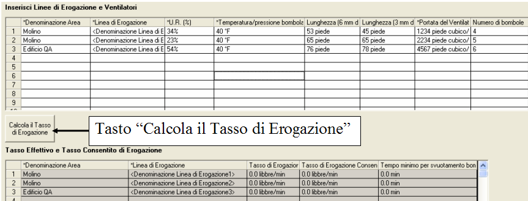
Avanti: tasto in basso a destra che permette di avanzare nel programma passando al tab successivo.
Messaggi di avvertimento associati al Tab Piano di Erogazione
Ogni volta che
si inserisce un dato al di fuori dei valori consenti precedentemente descritti, appare una finestra con un messaggio di avvertimento di questo tipo:
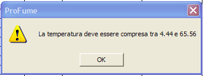


Occorre inserire nel tab almeno una Linea di Erogazione altrimenti appariranno messaggi di avvertimento come i due seguenti e non sarete in grado di effettuare il monitoraggio del lavoro in corso:
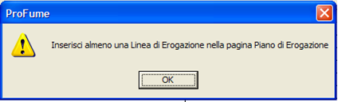
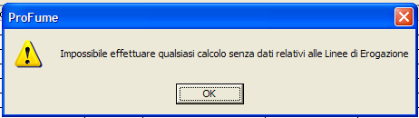
Qualora i Tassi di Erogazione
Effettivi siano superiori ai Tassi di Erogazione Consentiti appare il seguente messaggio di avvertimento:
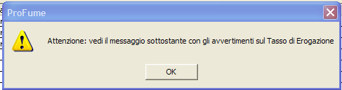
Messaggio
di avvertimento nel caso le dimensioni (diametro interno e lunghezza) della Linea di Erogazione inserite comportino un Tasso di Erogazione Effettivo che superi il Tasso di Erogazione Consentito basato sulla portata del ventilatore:
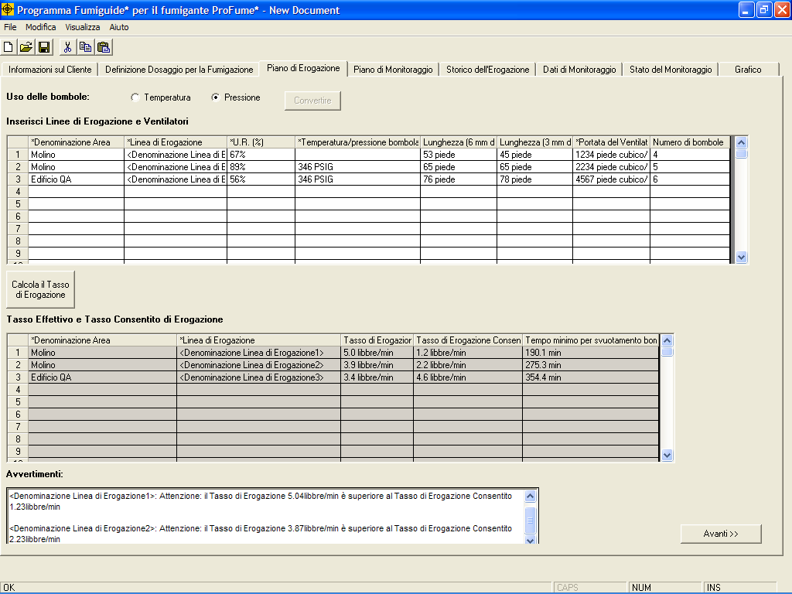
Quando la dose di introduzione eccede la dose massima consentita, compare un messaggio di avvertimento che indica l'avvenuto superamento della dose massima consentita. L'utilizzatore deve a questo punto provvedere alla modifica delle condizioni di introduzione: aumentando la capacità dei ventilatori, aumentando la lunghezza delle linee di introduzione, adottando linee di un diametro inferiore oppure una corretta combinazione di tutti questi elementi.